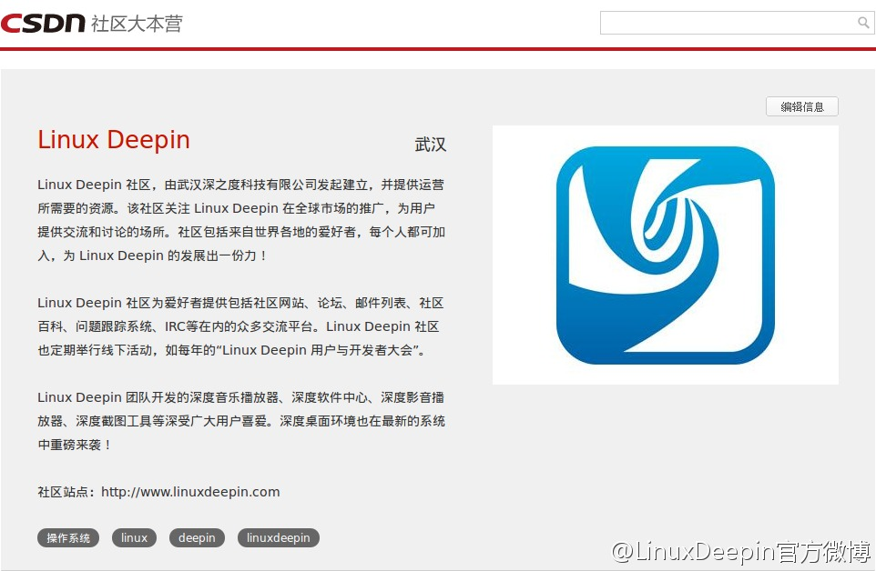

希望更多的技术社区加入进来。@深度操作系统:Linux Deepin社区加入CSDN社区大本营啦，详情猛戳：网页链接 。CSDN社区大本营（网页链接），目的是支持中国技术社区的发展和成长，可在此发布社区活动通知。希望更多的社区加入进来。感谢@Ada李力 @蒋涛CSDN 
回复@c2cj:网页链接 //@c2cj:怎么加入 //@Ada李力:希望更多的技术社区加入进来。@深度操作系统:Linux Deepin社区加入CSDN社区大本营啦，详情猛戳：网页链接 。CSDN社区大本营（网页链接），目的是支持中国技术社区的发展和成长，可在此发布社区活动通知。希望更多的社区加入进来。感谢@Ada李力 @蒋涛CSDN
赞同。这套书也是女儿和我都喜欢的。@老喻:女儿最喜欢的丛书。看这套书我感觉，对孩子的教育是伴随着家长的自我教育来完成的。大多数中国家长并不懂爱、家庭、独立、公平等等。确切说，大部分父母并非人格独立、心智健全的人。
@极客头条 邀请大家都来当主编。当主编很简单，把看到的好文章标题和URL粘过来就可以。@CSDN产品客服:#产品动态# 极客头条是CSDN推出的精品内容发掘平台，在这里可以发现、分享值得你关注的极客新闻。 宣言：既欢迎新出来的东西，也欢迎历史文献，关键是要有意思、有价值； 我们喜欢来自真正技术人员的原创文章和观点；不求多，但求精 。geek.csdn.net